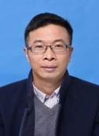
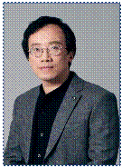
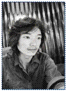
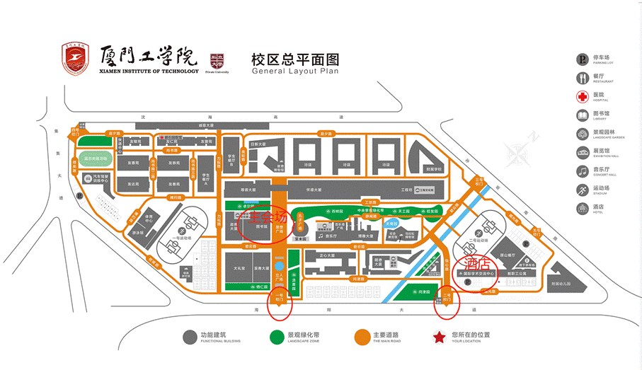

福建省人工智能学会2024年学术年会
暨第三届闽台非遗数字化保护与智能处理会议
程序册
主办单位：福建省人工智能学会
承办单位：厦门工学院数据科学与计算机学院
厦门工学院科研与学科处、厦门工学院人工智能研究院
协办单位：厦门大学、福州大学、福建师范大学、福建农林大学、
华侨大学、集美大学、闽台非遗文化数字化保护与智能
处理文化和旅游部重点实验室、闽台文化数字化传承与
智能计算福建省高校工程研究中心
赞助单位：厦门飞瑞致远教育科技有限公司、高等教育出版社、
福建超星教育科技有限公司
福建·厦门
2024年11月29日—2024年12月1日
会 议 介 绍
福建省人工智能学会2024年学术年会暨第三届闽台非遗数字化保护与智能处理学术会议于2024年11月29日至2024年12月1日在厦门召开。福建省人工智能学会2024年学术年会的会议主题为“混合智能”；同期举办“第三届闽台非遗数字化保护与智能处理会议”。本次会议由福建省人工智能学会主办，厦门工学院承办，厦门大学、福州大学、福建师范大学、福建农林大学、华侨大学、集美大学、闽台非遗文化数字化保护与智能处理文化和旅游部重点实验室、闽台文化数字化传承与智能计算福建省高校工程研究中心等单位协办。
会议安排了3个混合智能相关的大会报告，分别是国防科技大学胡德文教授的“脑信息模式识别与脑机交互”报告；杭州电子科技大学孔万增教授的“基于脑机协同智能的面部情绪识别研究”报告；厦门大学周昌乐教授的“机器意识的脑机融合途径”报告。
会议还设有2个分论坛，分别是青年分论坛和非遗分论坛。其中，青年分论坛包含3个报告（哈尔滨工业大学（深圳）张正教授的“高效能跨模态语义理解”、温州大学陈慧灵教授的“元启发算法研究及应用”、北京航空航天大学李阳教授的“医学图像智能诊断关键技术研究进展”）；非遗分论坛包含3个报告（厦门大学刘昆宏教授的“水墨画的数字化应用初探”、厦门辰瑞电子科技有限公司王韧技术总监的“泛AI时代的非遗传承”、咪咕新空文化科技（厦门）有限公司-鼓浪屿元宇宙项目段洛宥总监的“鼓浪屿元宇宙-新质生产力背景下，世界文化遗产保护活化的新视点”）。
会议期间还将举行福建省人工智能学会的理事会，闽台非遗文化数字化保护与智能处理文化和旅游部重点实验室工作会议。
本次会议得到3个单位的赞助，他们是：厦门飞瑞致远教育科技有限公司、高等教育出版社、福建超星教育科技有限公司。
福建省人工智能学会衷心感谢各位与会代表，感谢大家给予的大力支持，感谢会务组的辛勤付出！
福建省人工智能学会
2024年11月
会议组织机构
会议主席
周昌乐 （厦门大学）
程序主席
史晓东 （厦门大学）
郭躬德 （福建师范大学）
组织委员会主席
李咏梅 （厦门工学院）
陈毅东 （厦门大学）
青年分论坛主席
李佐勇 （闽江学院）
非遗分论坛主席
史晓东 （厦门大学）
福建省人工智能学会2024年学术年会
暨第三届闽台非遗数字化保护与智能处理会议议程
2024年11月29日（周五） | |||
时 间 |
程 序 |
地 点 |
主持人/参与人 |
14:00～22:00 |
会议代表入住/报到 |
国际学术交流中心大堂 |
会务组 |
18:00～19:30 |
晚餐 |
国际学术交流中心原山餐厅 |
会务组 |
19:30～21:30 |
文旅部重实验室工作会议 |
国际学术交流中心北辰厅 |
文旅部重实验室学术委员会成员 |
2024年11月30日上午（周六） | |||||||
时 间 |
程 序 |
地 点 |
主持人/参与人 |
||||
08:30～09:00 |
会议代表报到 |
图书馆立林学术报告厅 |
会务组 |
||||
09:00～09:20 |
开幕式 1.厦门工学院领导致辞 2.学会理事长致辞 |
李咏梅 |
|||||
09:20～09:30 |
全体代表合影 |
孔子广场 |
会务组 |
||||
09:30～10:15 |
大会报告（一）：脑信息模式识别与脑机交互 报告嘉宾：胡德文教授（国防科技大学） |
图书馆立林学术报告厅 |
李绍滋 |
||||
10:15～10:30 |
茶歇 |
会务组 |
|||||
10:30～11:15 |
大会报告（二）：基于脑机协同智能的面部情绪识别研究 报告嘉宾：孔万增教授（杭州电子科技大学） |
杜吉祥 |
|||||
11:15～12:00 |
大会报告（三）：机器意识的脑机融合途径 报告嘉宾：周昌乐教授（厦门大学） |
陈黎飞 |
|||||
午餐，12:00～13:30，地点：A3餐厅 | |||||||
2024年11月30日中午（周六） |
|||||||
时 间 |
程 序 |
地 点 |
主持人/参与人 |
||||
13:30～14:30 |
福建省人工智能学会 理事会会议 |
图书馆启贤会议室 |
全体理事 |
||||
2024年11月30日下午（周六） |
|||||||
时 间 |
程 序/地 点 |
程 序/地 点 |
|||||
14:40～17:45 |
青年分论坛 地点：明德125 |
非遗分论坛 （含文旅部重点实验室发展研讨会） 地点：明德126（研讨会：国际学术交流中心北辰厅） |
|||||
晚宴，18:00～19:30，地点：原山餐厅 |
|||||||
2024年12月1日（周日） |
|||||||
学术交流活动与离会 |
|||||||
青年分论坛详细议程
2024年11月30日下午（周六） | |||
时 间 |
程 序 |
地 点 |
主持人/参与人 |
14:40～15:35 |
青年论坛报告（一）：高效能跨模态语义理解 报告嘉宾：张正教授（哈尔滨工业大学（深圳）） |
明德125 |
于元隆 |
15:35～15:55 |
茶歇 |
会务组 |
|
15:55～16:50 |
青年论坛报告（二）：元启发算法研究及应用 报告嘉宾：陈慧灵教授（温州大学） |
王宗跃 |
|
16:50～17:45 |
青年论坛报告（三）：医学图像智能诊断关键技术研究进展 报告嘉宾：李阳教授（北京航空航天大学） |
李佐勇 |
|
非遗分论坛详细议程
2024年11月30日下午（周六） | |||
时 间 |
程 序 |
地 点 |
主持人/参与人 |
14:30～15:00 |
非遗论坛报告（一）：水墨画数字化应用探索 报告嘉宾：刘昆宏教授（厦门大学） |
明德126 |
姚俊峰 |
15:00～15:30 |
非遗论坛报告（二）：泛AI时代的非遗传承 报告嘉宾：王韧技术总监（厦门辰瑞电子科技有限公司） |
姚俊峰 |
|
15:30～15:50 |
茶歇 |
会务组 |
|
15:50～16:20 |
非遗论坛报告（三）：鼓浪屿元宇宙-新质生产力背景下，世界文化遗产保护活化的新视点 报告嘉宾：段洛宥总监（咪咕新空文化科技（厦门）有限公司） |
王量量 |
|
16:20～17:45 |
文旅部重点实验室发展研讨会 分享报告： 1. 旅游多源数据感知与决策技术研究进展与相关思考（重庆邮电大学 张旭教授） 2. 人工智能技术在丝绸纹样解析中的探索与应用（浙江理工大学 侯珏特聘副教授） 3. 旅游可持续智能评测技术文旅部重点实验室简介（中山大学 粟丽娟助理教授） 4. “数据要素X文化旅游”创新应用探索（景区交易数据要素化文化和旅游部技术创新中心苏万生 主任） |
国际学术交流中心北辰厅 |
王量量 |
大会报告（一）
报 告 人：胡德文 教授、博士生导师
报告题目：脑信息模式识别与脑机交互
报告时间：11月30日09:30～10:15
地 点：图书馆立林学术报告厅
报告摘要：本报告将介绍功能成像脑连接图谱的构造与验证，基于机器学习的脑重大疾病的客观诊断与干预，以及脑机交互方面的现状与实践。
专家简介：胡德文，国防科技大学智能科学学院教授、博士生导师。主要从事控制理论与控制工程，模式识别与智能系统，脑科学与认知科学研究。于2012年和2018年获国家自然科学奖二等奖共2项，于2020年获全国创新争先奖状。
大会报告（二）

报 告 人：孔万增 教授、博士生导师报告题目：基于脑机协同智能的面部情绪识别研究
报告时间：11月30日10:30～11:15
地 点：图书馆立林学术报告厅
报告摘要：情绪是一种综合了人的感觉、思想和行为的状态，它包括人对外界或自身刺激的心理反应，也包括伴随这种心理反应的生理反应。基于机器视觉的面部情绪识别存在情绪伪装识别难，面部疾病干扰以及依赖具体数据集缺乏泛化性等不足。本报告拟结合人脑的认知能力、迁移泛化能力与机器的强大计算能力与表征能力形成脑机协同智能开展面部情绪识别研究。报告从特征、模型、数据三个层面开展脑机协同智能研究，具体内容包括：基于脑机特征映射的面部情绪识别、基于脑机生成对抗网络的面部情绪识别、基于脑机耦合学习的面部情绪识别、基于脑机增强智能的半监督面部情绪识别。
专家简介：孔万增，博士、二级教授、博导、现任杭州电子科技大学党委委员、组织部（统战部）部长。2023、2024连续入选全球前2%顶尖科学家榜单；浙江省脑机协同智能重点实验室主任，浙江省“万人计划”科技创新领军人才。研究领域：脑机接口与人工智能。近几年主持国家重点研发计划项目、国家国际科技合作专项、国家自然科学基金（含联合重点、2面上、青年）等各类国家级项目10余项，主持省“尖兵”“领雁”计划、省重点研发计划等省部级项目近10项。在IEEE TPAMI\TNNLS\TAFFC\TII\TNSRE\TCDS\TIM、NeurIPS、ACL、IJCAI、ACMMM等人工智能高水平学术期刊和顶会发表论文100余篇，谷歌学术引用近4400次，担任Springer旗下SCI期卡Cognitive Neurodynamics副主编，成果先后获国家教学成果二等奖1项，省研究生教育成果一等奖1项，浙江省科技进步三等奖、吴文俊人工智能技术发明奖等省部级科技奖励3项。曾获中国电子学会优秀科技工作者、中国计算机学会（CCF）杰出会员，IEEE Senior Member等荣誉称号。
大会报告（三）
报 告 人：周昌乐 教授、博士生导师
报告题目：机器意识的脑机融合途径
报告时间：11月30日11:15～12:00
地 点：图书馆立林学术报告厅
报告摘要：由于意识的超逻辑性，如何让机器拥有类似人类一样的意识能力却成为了难以跨越的困难问题。报告针对这一问题，首先从意识构成说起，然后引申介绍了机器意识主要研究策略、方法与途径，特别是回顾了全局工作空间与信息整合理论两种经典途径，并讨论了目前实现机器意识途径的困境所在。好在随着脑机融合技术的不断进步，为解决这一困境给出了新的曙光。因此，在系统介绍脑机融合途径的基础上，报告最后给出实现机器意识的一种脑机融合方案，为实现机器意识指出了一种可能的新途径。
专家简介：周昌乐，北京大学理学博士，厦门大学教授、博士生导师、软件学院创院院长、前信息科学与技术学院院长，现任福建省人工智能学会理事长。主要开展心智仿造（意识建模、脑机融合、机器歌舞）、圣学发微、心法实证等方面的研究工作。先后被聘为计算机科学与技术、基础数学、语言学与应用语言学、中医诊断学、哲学和智能科学与技术等六个不同学科门类的博士生导师。是中国人工智能学会理事、清华大学智能技术与系统国家重点实验室学术委员、浙江大学语言与认知研究中心学术委员、杭州电子科技大学讲座教授、（成都）电子科学技术大学协议教授、四川大学课程教授。
青年论坛报告（一）
报 告 人：张 正 教授、博士生导师
报告题目：高效能跨模态语义理解
报告时间：11月30日14:40～15:35
地 点：明德大厦125
报告摘要：大规模的异构多模态数据正在实时地产生、传输、处理和应用，如何将海量多媒体数据转化为有价值的智能决策和自主分析是当前多模态人工智能研究的重点。本报告将汇报跨模态语义理解在多粒度语义理解、跨模态语义对齐和可信跨媒体关联等效能提升方面的最新研究成果，着重介绍本团队在跨模态语义理解在开放场景下数据、表征和模型的不确定性建模方法，并对未来发展方向与趋势进行讨论与展望。
专家简介：张正，哈尔滨工业大学（深圳）长聘教授，博士生导师，教育部青年长江学者，广东特支计划青年珠江学者，深圳市优青基金获得者，IEEE/CCF高级会员。长期从事高效能多模态机器学习的研究，专注于高效与可信多模态大模型，出版中英文学术专著/编著6部，发表IEEE/ACM汇刊和CCF A类会议论文100余篇，谷歌引用9000余次。主持国家级和省部级自然科学基金、深圳市技术攻关重点基金和创新基金及企业横向等项目10余项。受邀担任IEEE TAC、IEEE JBHI、Information Fusion等权威期刊副主编，以组织委员会成员成功举办了多个CCF推荐的国际会议，受邀担任ICML、NeurIPS、ICLR、CVPR、ACM MM等多个A类顶级学术会议的领域主席。
青年论坛报告（二）
报 告 人：陈慧灵 教授、博士生导师
报告题目：元启发算法研究及应用
报告时间：11月30日15:55～16:50
地 点：明德大厦125
报告摘要：元启发算法通过模仿自然界的生物演化和群体交互行为，提供了一种解决复杂优化问题的通用方法，尤其适用于具有非凸、高维等特性的全局优化问题。报告首先回顾元启发算法的发展历程，从早期的遗传算法（GA）、粒子群算法（PSO）到近年我们课题组提出的黏菌优化算法（SMA）、哈里斯老鹰优化算法（HHO）和龙格库塔优化器（RUN）等，展示了元启发算法不断进化以适应不同问题特征的过程。其次，本报告从复杂解空间的搜索算子开发和群体智能求解框架构建两个角度介绍了课题组最新提出的元启发算法，通过设计灵活的搜索机制和高效的求解框架，提出的算法能够在复杂环境中实现更好的全局收敛性能和局部搜索精度，并成功应用于解决高维数据关键特征选择和复杂图像分割等优化难题。最后，本报告进一步分享课题组在探索元启发算法和发表学术成果中的一些经验，希望这些工作能为元启发算法研究者和复杂优化问题的解决提供一定的借鉴和启发。
专家简介：陈慧灵，温州大学计算机学院院长，教授，博导，国家级青年拔尖人才、浙江省“万人计划”青年拔尖人才、第二批“浙江省高校领军人才培养计划”培养对象（高层次拔尖人才）。长期致力于智能计算方法研究及其在医学领域的应用研究。主持国家级、省部级、温州市重大科技专项等10余项课题，开发出多套智能辅助诊断系统并交付使用。连续多年入选全球学者学术影响力排行榜、中国高被引学者（Highly Cited Chinese Researchers）榜单、全球前2%顶尖科学家榜单、Guide2Research机构认定的中国计算机领域前200强科学家榜单。近年来，以第一作者/通讯作者在IEEE Transactions on Circuits and Systems for Video Technology、IEEE Transactions on Industrial Informatics、Artificial Intelligence in Medicine等国际人工智能领域重要学术期刊发表论文100余篇，其中10余篇入选ESI高被引论文，5篇入选ESI热点论文。当前H指数为99，论文被引数近4万次，2篇论文入选“中国百篇最具影响国际学术论文”榜单。受邀担任国际SCI杂志《Computers in Biology and Medicine》共同主编，《Scientific Reports》《Journal of Bionic Engineering》《Journal of Computational Design and Engineering》等多个国际SCI杂志编委。相关研究成果荣获中国商业联合会科学技术奖特等奖、天津市自然科学奖二等奖、吉林省科技进步奖一等奖。
青年论坛报告（三）
报 告 人：李 阳 教授、博士生导师
报告题目：医学图像智能诊断关键技术研究进展
报告时间：11月30日16:50～17:45
地 点：明德大厦125
报告摘要：本报告介绍与临床深度合作，采用多模态个体化脑网络与小样本深度学习融合的研究方法，结合临床知识驱动，探讨基于电生理数据、多模态结构/功能影像数据驱动模型假设，如何用于揭示脑疾病的脑活动机制，解决神经慢性脑疾病发病机理不明且误诊率高、临床难以有效检测大脑异常活动机制等问题。揭示了临床神经慢性脑疾病的潜在脑功能异常活动机制，为探索神经慢性脑疾病的个体化脑功能网络异常连接机理提供了理论基础和技术支持，为神经系统个体化神经调控与康复治疗干预提供了量化评估分析工具。
专家简介：李阳，北京航空航天大学自动化科学与电气工程学院教授、博士生导师，副院长，国家杰出青年基金获得者、国家级青年人才。2011年毕业于英国谢菲尔德大学自动控制与系统工程系，获哲学博士学位。2012年12月入选北京航空航天大学“卓越百人”海外人才计划。2013年2月起在北京航空航天大学模式识别与智能系统实验室工作。主要从事医学影像数据分析与处理、脑机接口与神经康复工程等方面的相关研究工作。主要研究手段包括脑电图（EEG），结构及功能性磁共振成像（DTI/fMRI），以及深度学习等计算分析方法。研究成果以第一/通讯作者在国际学术刊物上发表SCI论文60多篇，包括IEEE Transactions on Medical Imaging、Medical Image Analysis、Annals of Neurology及自然语言处理领域CCF-A会议ACL等。近五年主持国家级、省部级等科研项目10余项，其中包括国家自然科学基金重点、国家重点研发计划专项项目、北京市自然科学基金专题重点项目等。曾获英国谢菲尔德大学“哈里沃辛顿”学术奖、英国“优秀自费留学生奖”，研究成果获吴文俊人工智能自然奖、中国体视学“青年科技奖”等。担任国际期International Journal of Biomedical Engineering and Science 编委等。
非遗论坛报告（一）

报 告 人：刘昆宏 教授、博士生导师报告题目：水墨画的数字化应用初探
报告时间：11月30日14:30～15:00
地 点：明德大厦126
报告摘要：近年在文旅领域应用研究中，课题组围绕不同风格水墨画的数字化应用研究进行探索，通过融合虚拟现实、生成式人工智能等技术，针对不同类型水墨画的要素与特点，设计多种方案进行画中的关键特征抽取，在此基础上展开二次创作。我们的初步探索在一定程度上取得了预期的应用效果。
专家简介：刘昆宏，厦门大学教授，博士，博士生导师，电影学院数字媒体技术系主任。2008年7月在中国科技大学获模式识别与智能系统专业博士学位。2008年7月至今受聘于厦门大学。2014年9月至2015年9月于香港理工大学计算机系任职博士后研究员。中国计算机学会高级会员，虚拟现实与可视化专委会执行委员。至今发表SCI、EI检索的国际知名期刊、会议论文超过120篇，主持与参与的国家级项目10项，省部级与横向项目40余项。与境内外多个研究院及知名企业建立长期合作关系。主要研究方向包括机器学习；深度合成技术。
非遗论坛报告（二）

报 告 人：王 韧 厦门辰瑞电子科技有限公司技术总监报告题目：泛AI时代的非遗传承
报告时间：11月30日15:00～15:30
地 点：明德大厦126
报告摘要：在AI日益进化的时代下，非遗保存、传承、宣传的全新维度可能性。
专家简介：王韧，厦门辰瑞电子科技有限公司技术总监，厦门大学电影学院业界导师，致力于科技与艺术结合的开拓，带领技术团队E.l.Art 深耕XR、AI智能终端、新介质装置艺术多感官舞台秀演、虚拟制片、沉浸式体验、社交营销注意力消费等多个综合领域。作品为世博会、奥运会、迪拜Gitex、巴塞罗那MWC、拉斯维加斯CES、汉诺威CeBIT等多个国际头部展会的核心技术或主舞台展示。多次获得BBC、路透社、纽约时报、中国日报、新华日报及央视等知名媒体报道。
非遗论坛报告（三）
报 告 人：段洛宥 咪咕新空文化科技（厦门）有限公司-鼓浪屿元宇宙项目总监
报告题目：鼓浪屿元宇宙-新质生产力背景下，世界文化遗产保护活化的新视点
报告时间：11月30日15:50～16:20
地 点：明德大厦126
报告摘要：鼓浪屿元宇宙的构建，既是科技与文化的深度融合，也是文化遗产保护理念的革新。它不仅保存了鼓浪屿的样貌和历史记忆，更通过创新的方式使其活化，使之成为连接过去与未来，现实与虚拟的桥梁。在新质生产力的推动下，我们期待鼓浪屿元宇宙能成为世界文化遗产保护和活化的典范，为全球范围内的遗产保护提供新的思考和实践路径。
专家简介：段洛宥，咪咕新空文化科技（厦门）有限公司 · 鼓浪屿元宇宙项目总监；元宇宙与AR产业资深专家；中国移动元宇宙产业联盟牵头人。鼓浪屿元宇宙项目总监，主导业内首个以世界文化遗产地为原型的元宇宙标杆项目规划和开发落地；发起并组织中国移动元宇宙产业联盟，联合多方资源推动产业协同与技术创新； 移动终端动漫国际标准T.621联盟主理人，发展联盟成员至百余家，主导AR、MR等多项核心技术研发突破；咪咕新空公司“1+3”AR产品体系规划师，带领团队实现AR秀、AR伴游等创新产品的商业化落地。
参会交通指南
厦门工学院国际学术交流中心位于集花园式景致、古典文化底蕴为一体的厦门工学院校园内，建筑面积近万平米，毗邻未来的厦门“硅谷”——软件园三期，俯望厦门岛外核心景点园博苑、陈嘉庚纪念馆，并且与厦门“海上地铁”的一号线紧紧相依，厦门国际机场、厦门北站也都在二十分钟车程范围内，交通网络四通八达。
厦门工学院国际学术交流中心拥有136间各类客房及套房，各种规格的多媒体会议室及近200个餐位的餐厅。中心内部还配备有自助洗衣房、咖啡书吧等，满足您商务、休闲的需求；此外，无论您是学术参访还是度假休闲，入住宾客均可由中心前往有着“花园式高校”美誉的厦门工学院，重温校园生活，体验现代化的体育设施和文化展馆，使您远离城市的喧嚣，实现身心酣畅淋漓的放松、休闲。厦门站打车到酒店大约40分钟；厦门北站打车到酒店大约10分钟；高崎机场打车到酒店大约25分钟左右。
出发点 |
距离 |
交通方式 |
车程 |
厦门高崎机场 |
距离酒店16公里 |
1. 乘坐BRT快1路/快2路 2. 打出租车直达 |
1. 公交方式：1小时左右 2. 打车方式：25分钟左右 |
厦门火车站 |
距离酒店26公里 |
1. 乘坐BRT快1路 2. 打出租车直达 |
1. 公交方式：80分钟左右 2. 打车方式：40分钟左右 |
厦门北站 |
距离酒店3公里 |
1. 乘坐公交车949路/957路/957路大站快运 2. 打出租车直达 |
1. 公交方式：30分钟左右 2. 打车方式：10分钟左右 |

备注：厦门工学院是无烟校园，校园内禁止吸烟。